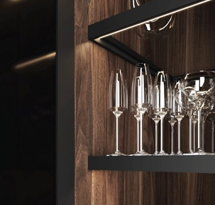

Рамочный профиль из анодированного алюминия для полок со стеклянной вставкой и встроенной LED-подсветкой.
| Подсветка | лента 120 LED/м, от тёплого до нейтрального света |
| Монтаж | скрытая проводка, надёжное крепление |
| Применение | кухни, витрины, гостиные, винные ниши, гардеробные |